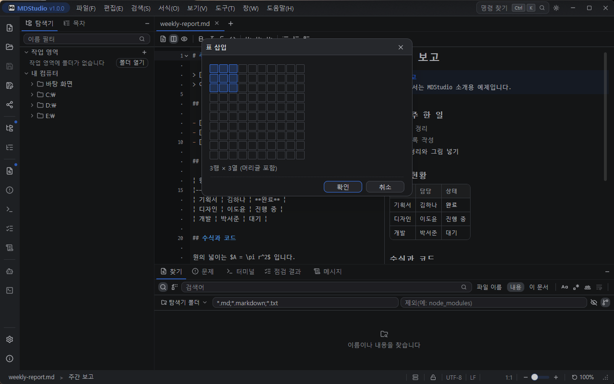

보고서 꾸미기: 표·그림·링크
주간 보고에 표와 그림, 링크를 넣어 한 장짜리 보고서로 만듭니다. 약 7분 걸립니다.
참고: 연습 파일은 앱에서 F1 로 이 페이지를 열면 받을 수 있습니다(연습 파일 열기 링크).
만들 결과
- 3행 × 3열 표, 차트 그림 한 장, 홈페이지 링크 한 줄이 든
주간 보고.md
준비
- 위의 연습 파일 열기 링크를 클릭합니다.
이렇게 보입니다: 문서 폴더 아래 MDStudio 따라하기\05-tut-report 폴더로 연습 파일이 복사되고 주간 보고.md 탭이 열립니다.
1단계: 표 넣기
## 이번 주 실적줄 아래 빈 줄을 클릭합니다.- 서식 > 표... 를 클릭합니다. 「표 삽입」 창에 칸 격자가 나옵니다.
- 격자의 셋째 줄 셋째 칸을 클릭합니다.
- 표의 첫 칸에 놓인 커서 자리에
항목을 입력합니다.
이렇게 보입니다: 빈 줄 자리에 3행 × 3열 표가 들어가고 첫 칸에 항목 이 들어갑니다. 첫 행은 머리글입니다.

막히면: 칸을 클릭하기 어려우면 방향키로 크기를 맞추고 Enter 를 누릅니다. 처음 크기는 3 × 3 입니다. → 표
2단계: 그림 넣기
## 차트줄 아래 빈 줄을 클릭합니다.- 서식 > 그림... 을 클릭합니다. 「그림 넣기」 창이 열립니다.
- 창 위 도구 줄 맨 왼쪽의 폴더 모양 버튼(「그림 파일 열기」)을 클릭합니다.
- 연습 폴더의
img폴더에서chart.png를 선택하고 열기를 클릭합니다. - 창 가운데에 그림이 나오면 [확인] 버튼을 클릭합니다.
이렇게 보입니다: 빈 줄 자리에  줄이 생깁니다. 그림 파일은 문서 옆 주간 보고.assets 폴더로 복사됩니다.
막히면: 「문서를 먼저 저장해야 그림을 넣을 폴더가 정해집니다.」 알림이 나오면 저장하지 않은 새 문서에서 시작한 것입니다. 연습 파일 열기 링크로 다시 시작합니다. → 그림·링크·기호·다이어그램·수식
3단계: 링크 넣기
## 참고아래 문장에서MDStudio 홈페이지를 마우스로 끌어 선택합니다.- 서식 > 링크... 를 클릭합니다. 「링크 삽입」 창이 열립니다.
- 「주소」 칸에
https://civilian7.github.io/mdstudio를 입력합니다. - [확인] 버튼을 클릭합니다.
이렇게 보입니다: 선택한 텍스트가 [MDStudio 홈페이지](https://civilian7.github.io/mdstudio) 로 바뀝니다.
4단계: 저장하기
- 파일 > 저장(Ctrl+S)을 클릭합니다.
이렇게 보입니다: 연습 폴더의 주간 보고.md 에 표·그림·링크가 저장됩니다.
다 했습니다
- 연습 폴더
MDStudio 따라하기\05-tut-report의주간 보고.md가 표와 그림이 든 보고서가 되었습니다. - 다음 따라하기: PDF·Word 로 내보내기
- 표 편집은 표, 그림 폴더 규칙은 그림·링크·기호·다이어그램·수식을 봅니다.